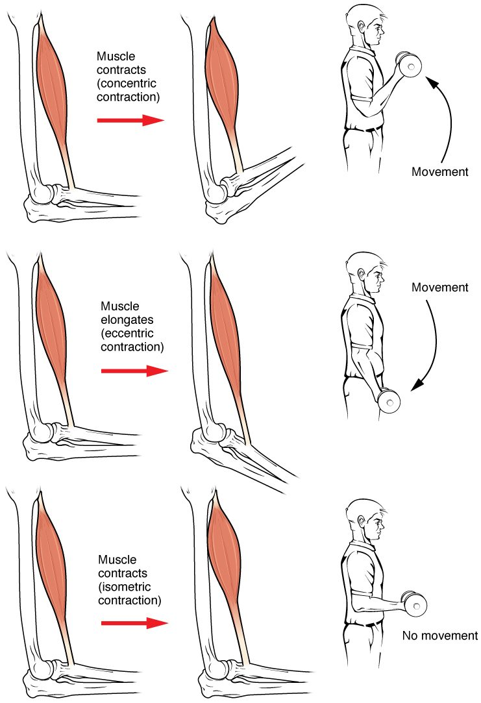

Motor units and muscle tension
1Why this matters
Mr. Okafor, 58, is six weeks out from knee surgery. His physical therapist asks him to press his leg against her hand without moving it, then to lower himself slowly into a chair, then to stand up again. Each task uses the same thigh muscle in a different way. To see why the slow sit-down is the hardest to control, you need to know how a muscle whose fibers either fire or don't can produce every force from a gentle hold to a full push.
2What this builds on
3Quick check before you start
1. What does calcium do when the sarcoplasmic reticulum releases it into the cytosol?
- Binds troponin, which moves tropomyosin off actin's binding sites
- Binds the myosin head and splits ATP
- Carries the action potential down the T tubules
Show the answer
Calcium binds troponin. Troponin shifts tropomyosin away from the binding sites on actin, so myosin heads can attach and cross-bridges form.
- Correct: Binds troponin, which moves tropomyosin off actin's binding sites:
- Binds the myosin head and splits ATP:
- Carries the action potential down the T tubules:
2. What ends a contraction when the motor neuron stops firing?
- The sarcomeres run out of actin
- The SR's calcium pump draws calcium back in
- The myosin heads lose their ATP permanently
Show the answer
With no new action potentials, the SR's calcium pump clears calcium from the cytosol. Tropomyosin covers actin's binding sites again, and cross-bridges stop forming.
- The sarcomeres run out of actin:
- Correct: The SR's calcium pump draws calcium back in:
- The myosin heads lose their ATP permanently:
3. At a neuromuscular junction, what does the motor neuron release onto the muscle fiber?
- Calcium
- Acetylcholine
- ATP
Show the answer
The motor neuron's axon terminal releases acetylcholine, which binds receptor proteins on the end plate and triggers an action potential in the muscle fiber.
- Calcium:
- Correct: Acetylcholine:
- ATP:
4Anatomy

With labels hidden, select a box to reveal its label.
5How it works, step by step
- You decide to lift a heavy bag, and input to the motor neurons of your arm muscle rises.Small motor neurons reach threshold first, then larger ones join: more motor units are recruited.
- Each recruited motor neuron fires action potentials, faster as input grows.Every fiber in each unit fires; new action potentials arrive before calcium from the last one has been pumped back into the SR.
- Calcium in the cytosol stays high between action potentials.Cross-bridges keep cycling, twitches sum toward tetanus, and each fiber's tension rises several-fold.
- Tension summed across all active fibers rises until it matches the weight of the bag.Until then the muscle contracts isometrically; once tension exceeds the load, the muscle shortens and the bag rises (a concentric contraction).
6Core concepts
7A common mistake
The wrong idea: To lift something heavier, each muscle fiber contracts harder, and a contracting muscle always shortens.
What actually happens: A fiber's twitch is all-or-none. Your nervous system raises force by recruiting more motor units and firing them faster, so twitches sum toward tetanus. And contraction means cross-bridges are pulling, not that the muscle shortens: a muscle can contract while holding still (isometric) or while being lengthened (eccentric), as when you lower yourself into a chair.
8Check yourself
Anything you miss goes into your review queue.
1. An eye surgeon notes that the muscles that turn the eyeball have about 10 to 20 fibers per motor unit, while a large calf muscle has over 1,000. What does this difference allow the eye muscles to do?
- Contract with far greater total force than the calf
- Keep contracting without ever relaxing
- Make very small, precise adjustments in the force they produce
- Contract without needing motor neurons
Show the answer
Each extra motor unit adds its fibers' force all at once. When a unit has only 10 to 20 fibers, each step in force is tiny, so the eye can be turned by very small, precise amounts.
- Contract with far greater total force than the calf: Small motor units give fine control, not great force. The calf, with large units and many more fibers, produces far more force.
- Keep contracting without ever relaxing: Motor unit size says nothing about relaxing; every twitch still ends with calcium being pumped back into the SR.
- Correct: Make very small, precise adjustments in the force they produce: Correct. Small units mean small steps of force, which allows fine control.
- Contract without needing motor neurons: Every skeletal muscle fiber, eye muscles included, contracts only when its motor neuron fires.
2. What is the main difference between the stimulation that produced the left trace and the stimulation that produced the right trace?
- The right trace came from a stronger shock to each fiber
- Far more stimuli per second on the right
- The right trace came from a muscle with fewer motor units
- The right trace came from a single stimulus held for longer
Show the answer
Both traces come from repeated stimuli. On the left, each stimulus arrives before the fiber has relaxed, so twitches sum in waves. On the right, stimuli arrive so fast that there is no time to relax at all, and the waves fuse into complete tetanus.
- The right trace came from a stronger shock to each fiber: A fiber's twitch is all-or-none: once a shock reaches threshold, a stronger shock does not make that fiber contract harder. Frequency, not strength, changes the pattern.
- Correct: Far more stimuli per second on the right: Correct. Higher frequency turns wave summation into complete tetanus.
- The right trace came from a muscle with fewer motor units: The traces show how one set of fibers responds over time. Fewer motor units would lower tension, not smooth out the waves.
- The right trace came from a single stimulus held for longer: One action potential gives one twitch however long the shock lasts. A sustained contraction needs repeated action potentials.
3. A researcher raises the rate at which she stimulates a muscle fiber from 2 per second to 80 per second. Predict the change in each variable.
| Variable | Change |
|---|---|
| Time between action potentials | — |
| Calcium released by each action potential | — |
| Average calcium level in the cytosol | — |
| Relaxation between contractions | — |
| Peak tension | — |
Show the answer
Raising the frequency shortens the gap between action potentials until calcium can no longer be cleared between them. Calcium stays high, the fiber stops relaxing, and tension sums from separate twitches to complete tetanus, several times a single twitch's tension.
- Time between action potentials: down. At 80 per second, a new action potential arrives every 12.5 ms instead of every 500 ms.
- Calcium released by each action potential: no change. Each action potential is all-or-none and releases about the same pulse of calcium from the SR; what changes is how often the pulses come.
- Average calcium level in the cytosol: up. Calcium is released again before the pumps have cleared the last release, so it stays high.
- Relaxation between contractions: down. There is no time to pump calcium back between stimuli, so the fiber cannot relax.
- Peak tension: up. Sustained high calcium keeps cross-bridges cycling long enough to pull the elastic parts fully taut, so the twitches sum toward complete tetanus.
4. You switch from lifting a mug to lifting a full kettle with the same arm. Select every change your nervous system uses to raise the force of the muscle.
- Recruiting more motor units
- Firing each active motor neuron at a higher rate
- Making each fiber's action potential larger
- Bringing in larger motor units
- Making each fiber's twitch stronger than all-or-none allows
Show the answer
Force is graded by recruitment (more units, with larger ones joining as force rises) and by firing rate (moving units from summation toward tetanus). A single fiber's action potential and twitch are all-or-none, so the nervous system cannot make an individual fiber contract harder by a stronger signal.
- Correct: Recruiting more motor units: Correct. More motor units means more fibers pulling.
- Correct: Firing each active motor neuron at a higher rate: Correct. Faster firing makes twitches sum toward tetanus.
- Making each fiber's action potential larger: Action potentials are all-or-none; a fiber's action potential is the same size whenever it fires.
- Correct: Bringing in larger motor units: Correct. By the size principle, larger units join as the required force grows.
- Making each fiber's twitch stronger than all-or-none allows: A fiber's response to one action potential is fixed; extra force comes from more fibers and faster firing, not a bigger twitch.
5. A man slowly lowers a heavy box from chest height to the floor, bending his elbows. What is the muscle that bends his elbow doing?
- Relaxing completely while gravity lowers the box
- Contracting while it lengthens
- Contracting while shortening, pulling the box down
- Contracting isometrically, at a fixed length
Show the answer
The weight of the box is greater than the tension in the muscle, so the muscle is pulled longer. Its cross-bridges keep working to resist, which controls the speed. This is an eccentric contraction.
- Relaxing completely while gravity lowers the box: If the muscle relaxed completely, the box would drop, not descend slowly. Controlled lowering needs active tension.
- Correct: Contracting while it lengthens: Correct. Active tension while the muscle lengthens is an eccentric contraction.
- Contracting while shortening, pulling the box down: Gravity pulls the box down; the muscle that bends the elbow would shorten only if the box were being lifted.
- Contracting isometrically, at a fixed length: The elbow angle is changing, so the muscle's length is changing. An isometric contraction would hold the box still.
6. A muscle fiber is stretched to 160 percent of its resting sarcomere length and then stimulated. Using the graph, what happens and why?
- Maximal: the stretch stores extra force in the fiber
- Low: little filament overlap remains
- Zero: the thick filaments hit the Z discs
- Unchanged: length has no effect on tension
Show the answer
At 160 percent the line is near the bottom of its falling slope. The thin filaments have been pulled almost off the thick filaments, so few myosin heads can reach actin and few cross-bridges form.
- Maximal: the stretch stores extra force in the fiber: Active tension depends on filament overlap, not on how far the fiber is stretched. Past the middle range, more stretch means less overlap and less tension.
- Correct: Low: little filament overlap remains: Correct. Little overlap means few cross-bridges and little tension.
- Zero: the thick filaments hit the Z discs: Thick filaments hit the Z discs when the sarcomere is too short, not too long. At 160 percent a little overlap remains.
- Unchanged: length has no effect on tension: The graph shows tension changing strongly with length. That is the length–tension relationship.
7. In complete tetanus, a fiber produces several times the tension of one twitch, although each action potential releases about the same calcium. What explains the extra tension?
- Each action potential in tetanus is larger than in a twitch
- Tetanus recruits extra fibers into the motor unit
- Calcium stays high long enough for the elastic parts to be pulled fully taut
- The myosin heads switch to a stronger power stroke
Show the answer
In a single twitch, calcium is cleared before the cross-bridges have finished stretching the fiber's elastic parts, so tension never reaches its full value. When action potentials arrive faster than calcium is cleared, calcium stays high, cross-bridges keep cycling and tension builds to its maximum.
- Each action potential in tetanus is larger than in a twitch: Action potentials are all-or-none; they are the same size in a twitch and in tetanus.
- Tetanus recruits extra fibers into the motor unit: A motor unit's fibers are fixed by the branches of its neuron. Adding fibers is recruitment of other units, not tetanus of one fiber.
- Correct: Calcium stays high long enough for the elastic parts to be pulled fully taut: Correct. Sustained calcium allows sustained cycling and full tension.
- The myosin heads switch to a stronger power stroke: The power stroke is the same; what changes is how long cross-bridges keep cycling.
9Summary
A motor unit is one motor neuron and all the fibers it supplies; small units allow fine control and large units give force. One action potential gives one twitch, with a latent period, a contraction phase and a longer relaxation phase. When action potentials arrive before the fiber relaxes, calcium stays high and twitches add up (wave summation), up to incomplete and then complete tetanus. Force is graded by recruitment, from small units to large ones, and by firing rate. Muscle tone is a relaxed muscle's resistance to stretch, largely passive, with some motor units firing in postural and stretched muscles. In an isotonic contraction length changes (concentric: shortens; eccentric: lengthens); in an isometric contraction it does not. Tension is greatest at the optimal length, where thick and thin filaments overlap best.